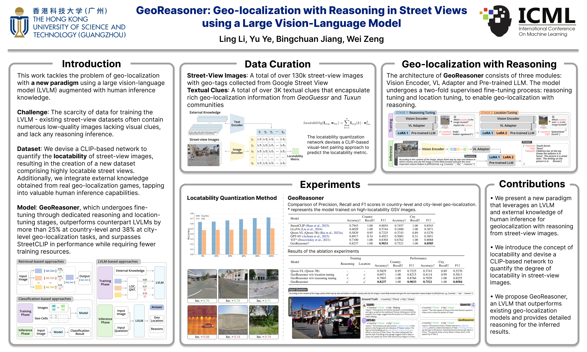

Style reference
GeoReasoner: Geo-localization with Reasoning in Street Views using a Large Vision-Language Model
该人工 GT 来自非测试样例，仅用于提供配色、字体层级、留白、分区和图文密度参考。下面每组左侧为 Codex 生成结果，右侧为当前测试论文的 Ground Truth。
点击海报可查看原始大图；“叠加对比”可调节预测图透明度。

Style reference
该人工 GT 来自非测试样例，仅用于提供配色、字体层级、留白、分区和图文密度参考。下面每组左侧为 Codex 生成结果，右侧为当前测试论文的 Ground Truth。
点击海报可查看原始大图；“叠加对比”可调节预测图透明度。